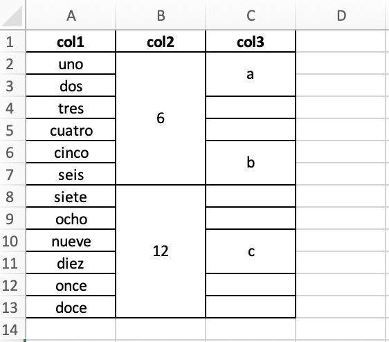
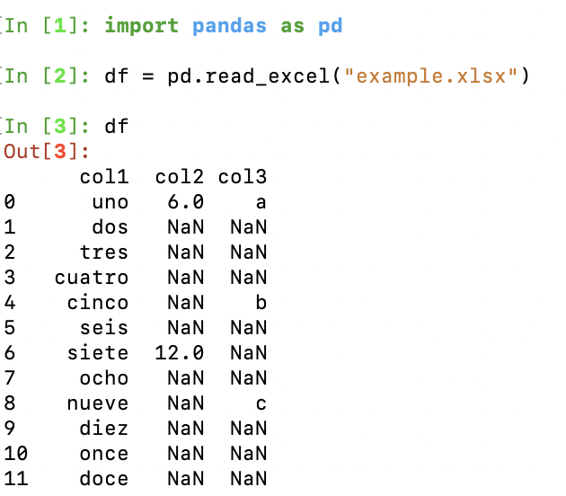
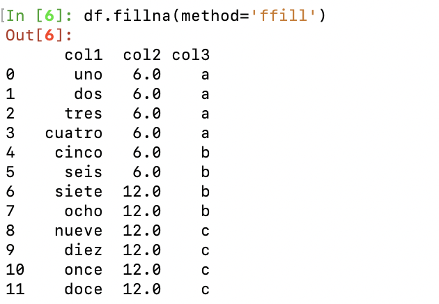
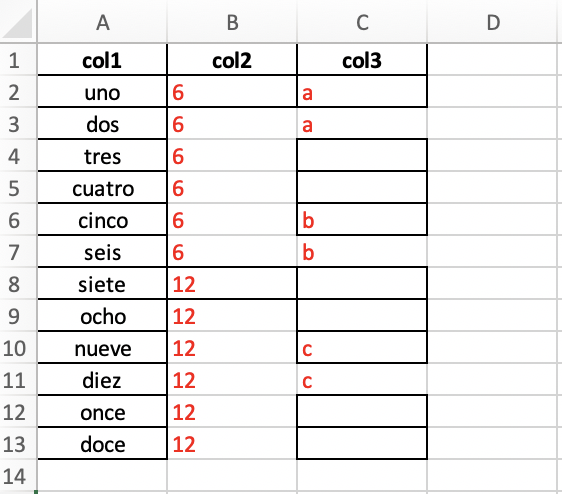

import openpyxl
from openpyxl.styles import Alignment
from openpyxl.styles import Font
def unmerge_cells_from_file(my_file):
"""
For a given file, opens each sheet and unmerges the cells.
Aligns to left and highlights in red the unmerged cells.
Saves a new excel file with the _UNMERGED suffix.
"""
LEFT_ALIGN = Alignment(horizontal='left')
RED_FONT = Font(color="FF0000")
# data_only is required to evaluate the cells and store the correct value
wb = openpyxl.load_workbook(my_file, data_only=True)
for sheet in wb.sheetnames:
ws = wb[sheet]
# It's weird, but the for loop do not capture all the groups
# So we iterate with a while loop to reduce all merged cells
while len(ws.merged_cells.ranges) > 0:
group = ws.merged_cells.ranges[0]
min_col, min_row, max_col, max_row = group.bounds
top_left_cell_value = ws.cell(row=min_row, column=min_col).value
# unmerge before asigning a the value
ws.unmerge_cells(str(group))
for irow in range(min_row, max_row+1):
for jcol in range(min_col, max_col+1):
cell = ws.cell(row=irow, column=jcol)
cell.value = top_left_cell_value
cell.alignment = LEFT_ALIGN
cell.font = RED_FONT
output_file = my_file.replace("input", "tmp").replace(".xlsx", " UNMERGED.xlsx")
wb.save(output_file)
returnUnmerging celdas de excel
python
excel
cells
Cuando pandas se quedó corto
Hace poco necesitaba procesar una gran cantidad de archivos excel que tenía muchas celdas fusionadas (merged cells). Algo así como muestro en la imagen:

Pensé que vieja confiable librería de pandas sería suficiente, pero no. Al abrir el archivo con pandas, el valor de la celda se asigna sólo a la primera:

Ingenuamente intenté llenar con fillna y reemplazar los NaNs, pero el resultado no era el desado:

Ninguno de los métodos para llenar las celdas contiguas (fillna con opciones ‘backfill’, ‘bfill’, ‘pad’, ‘ffill’, None) sirve, porque hay celdas no fusionadas que deberían mantenerse sin datos.
¿Qué hacer entonces? Después de mucho googlear, encontré la solución correcta en stackoverflow. La librería openpyxl es increíblemente flexible y permite la manipulación celda a celda.
La siguiente función que es una versión mejorada de la propuesta en stackoverflow removerá las celdas fusionadas copiando los valores correspondientes. Lo realizará para todas las pestañas del archivo, y marcará en rojo las celdas que fueron intervenidas:
El excel resultante es el siguiente:

Desde ese punto, ya es posible trabajar con pandas sin problemas.
Observación: Hay que usar una versión reciente de pyopenxl, ya que en la versión anterior arroja un error.